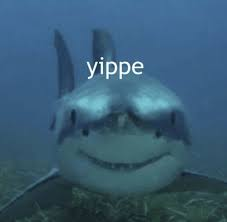

Ducks!
Ducks are pretty interesting animals. Ducks have very social personalities. Ducks are also very emotional as well as intelligent. Much like dogs and cats ducks love touch, cuddling, and affection. Also, Humans can form emotional bonds with ducks as well and ducks can feel emotions very similar to those of humans.